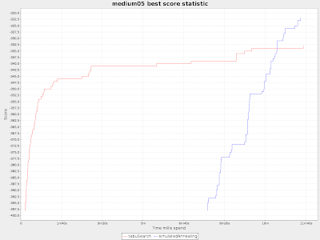
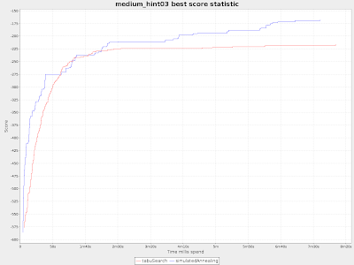

Simulated Annealing: a new algorithm for Drools Planner
Drools Planner has a very good tabu search implementation, but tabu search is just one meta-heuristic algorithm. There are plenty more, such as simulated annealing, great deluge, late acceptance, …
Until recently, the simulated annealing implementation in Drools Planner was very experimental (not to say useless). But a little tender care and attention (and the pressure of a nurse rostering competition deadline) changed that in the last month.
Here’s a comparison (created by the Benchmarker) between tabu search and the new simulated annealing, in which both configurations are roughly tweaked:
As you can see, for these 3 testdata sets, simulated annealing beats tabu search. This holds true for the other medium (10 minute) datasets of the nurse rostering example too, but not for all the other examples. So if you’re using Drools Planner with tabu search, you might want to replace it with simulated annealing (from version 5.1.0.CR1). And that’s easy! Just change a few lines. Or use the Benchmarker to compare both and select a winner:
<solverBenchmark>
<name>tabuSearch</name>
<localSearchSolver>
<selector>
...
</selector>
<acceptor>
<completeSolutionTabuSize>1000</completeSolutionTabuSize>
<completePropertyTabuSize>11</completePropertyTabuSize>
</acceptor>
<forager>
<minimalAcceptedSelection>800</minimalAcceptedSelection>
</forager>
</localSearchSolver>
</solverBenchmark>
<solverBenchmark>
<name>simulatedAnnealing</name>
<localSearchSolver>
<selector>
...
</selector>
<acceptor>
<simulatedAnnealingStartingTemperature>10.0</simulatedAnnealingStartingTemperature>
<completePropertyTabuSize>5</completePropertyTabuSize>
</acceptor>
<forager>
<pickEarlyType>FIRST_BEST_SCORE_IMPROVING</pickEarlyType>
<minimalAcceptedSelection>4</minimalAcceptedSelection>
</forager>
</localSearchSolver>
</solverBenchmark>
Notice that I have even used a little bit tabu in the simulated annealing configuration, although I haven’t experimented much yet to prove that that is indeed better.
Below are best score over time graphs of each of the 3 testdata sets:

In medium05, the simulated annealing algorithm kicks in very late, because a simulatedAnnealingStartingTemperature of 10.0 is way to high for it apparently.

In medium_hint03, at first, the 2 algorithms are competitive, but later on simulated annealing is much more flexible to escape local optima.
In medium_late05, simulated annealing is always better than tabu search.
So what’s next? Good implementations of the other meta-heuristics of course, but more importantly: phasing. Phasing can chain several meta-heuristics in a single run. For example, it can use simulated annealing the first 80% of the time, but switch to tabu search for the last 20% of the time.

{kind=link}
{kind=link}
{kind=link}
{kind=link}